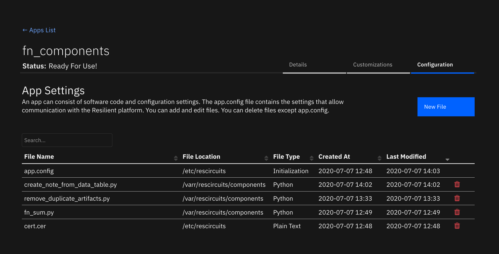
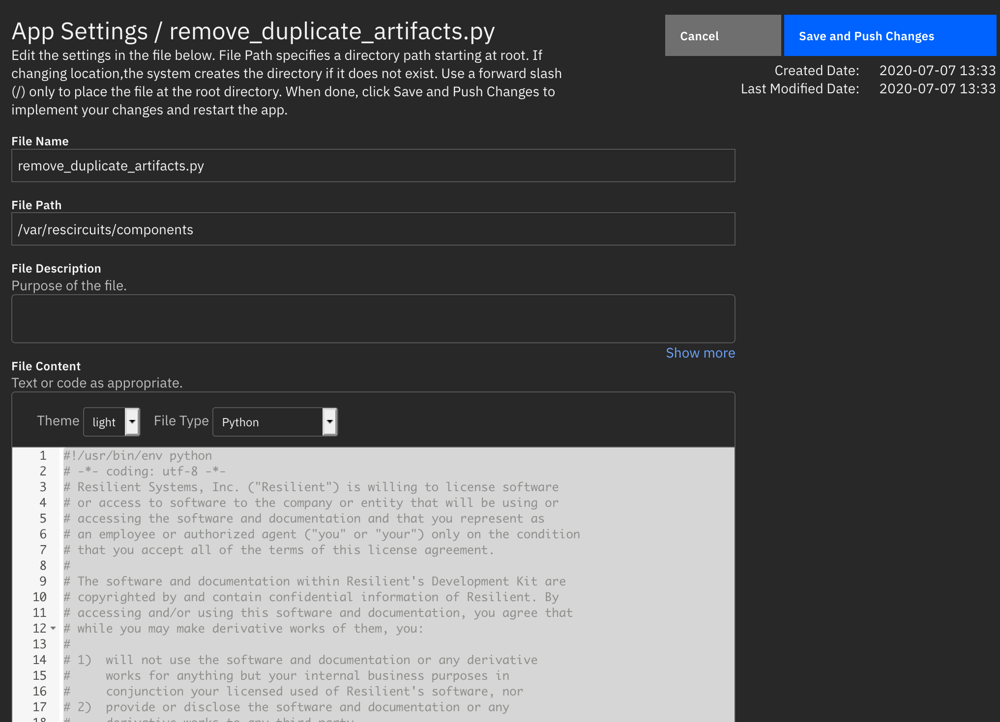
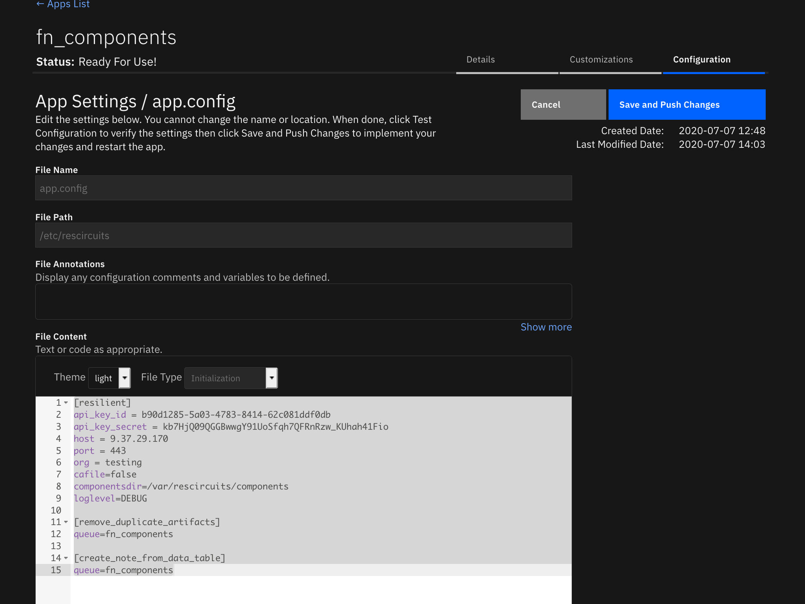
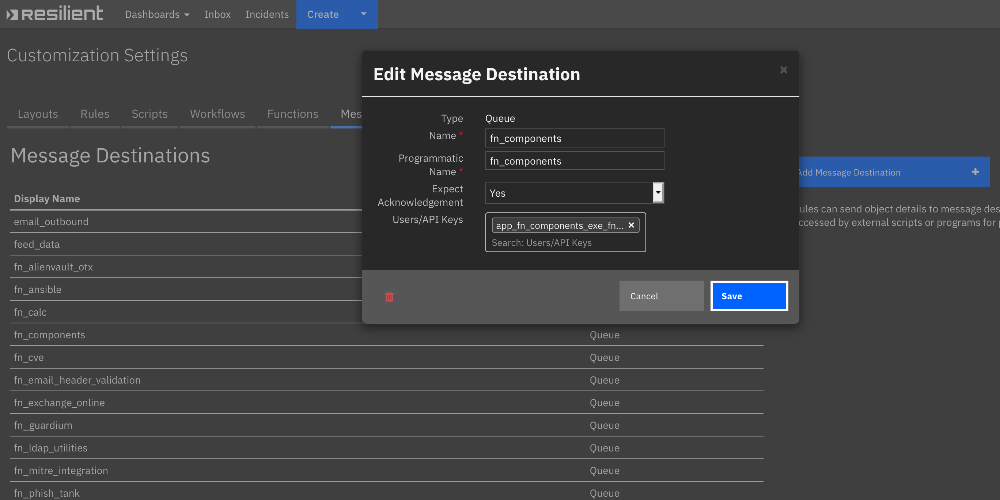
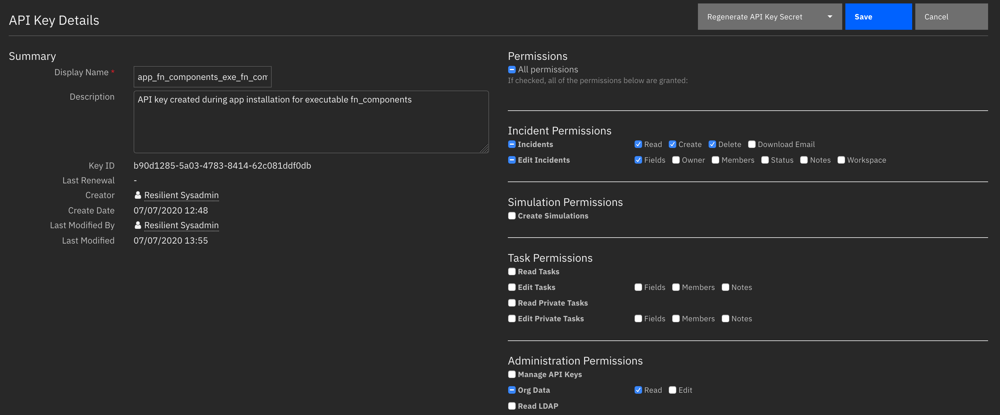
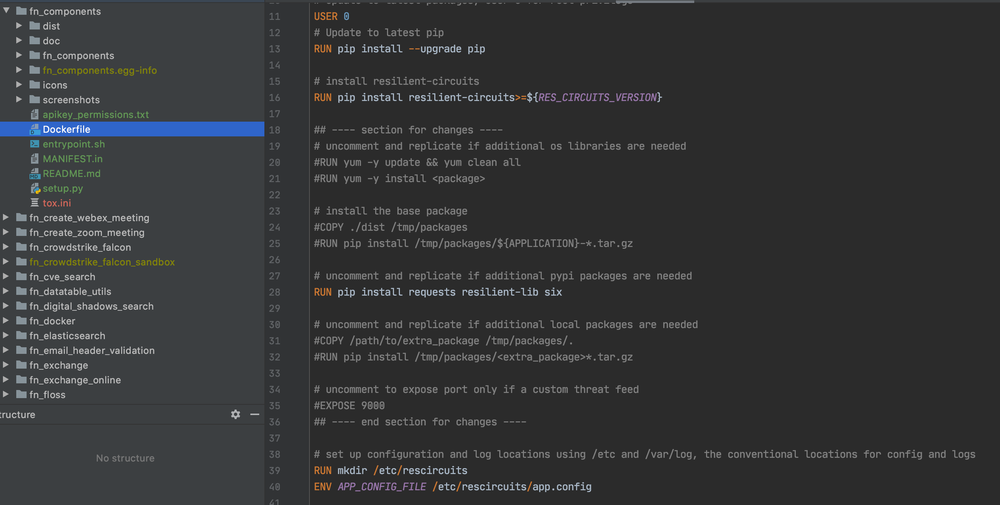

App Host Components¶
Table of Contents¶
Revision History¶
Version |
Date |
Notes |
|---|---|---|
1.0.0 |
07/2020 |
Initial Release |
About This Package¶
This package is used to convert existing, single-file Python integrations to use the App Host framework.
Today, the componentsdir parameter in the app.config file references a directory where these files reside.
To use these files in an App Host environment, install this app using the Apps tab within Administrative Settings and, through the Configuration tab of the app, add each single-file integration.

Container Environment¶
The container runs resilient-circuits similar to an Integration Server and continues to use the componentsdir
app.config parameter. The following additional Python packages have been added to the container:
ldap3
jinja2
json2html
pytz
requests
resilient-lib
six
tldextract
If you require additional Python packages, refer to the Adding Additional Python Packages section.
Requirements¶
This App Host package assumes that the message destination, functions, and rules for each single-file integration are
already defined in your Resilient platform. If you require moving your integrations between Resilient platform,
consider converting your single-file integrations to fully packaged Apps using the resilient-sdk codegen tool and
capability.
For each single-file integration:
Each file must be Python 3 compatible.
Have no additional Python packages required other than those specified in the container environment.
Required message destinations, functions and rules must already exist in your Resilient organization.
Installation and Configuration¶
Perform the following procedure to install app-fn_components and configure your single file integrations. For details on installing apps, see the System Administrator Guide on the IBM Knowledge Center.
Log in to the Resilient platform, select Administrator Settings from the system menu then go to the Apps tab.
Click the Install button, find the previously downloaded app-fn_components zip file and install the app.
In the Apps tab, click the app-fn_components app and select its Configuration tab.
Click the New File button and enter the following:
For File Name, enter the name that is reflective of your single-file integration.
For File Path, enter: /var/rescircuits/components
For File Description, enter a description of your app.
For File Content, copy the contents of the single-file Python code and paste it here. Optionally change the type type to ‘Python’.
Click Save and Push Changes.
Repeat the previous step for each single-file integration.
In the app’s Configuration tab, select app.config.
In File Content under [Resilient], add: componentsdir=/var/rescircuits/components
If the single-file integration has its own configuration section in the integration server’s app.config file, copy and paste it here.
Repeat the previous step for each single-file integration.
Click Save and Push Changes.
Click the app’s Details tab and click Deploy.


Note: Once deployed, your single-file integrations are enabled for rule execution. It is best to remove these files from your Integration Server and restart resilient-circuits as both will be active otherwise.
Message Destination Setup¶
The next step is to add the API Key created for this container, app_fn_components_exe_fn_components,
to each of the message destinations used by your single-file integrations.
For convenience, all your single-file integrations can share the same message destination.

API Key Permission Setup¶
Since it’s not known in advance which API key permissions are required for your single-file integrations, it is necessary to review each integration for the specific API calls performed for their operation. The base permissions for this API key are:
read and edit incident data.
create, edit and delete incident elements, such as artifacts, attachments, notes, milestones and tasks.
If your single-file integrations require more or less permissions, edit the key’s permissions set as necessary.
Insufficient permissions will cause your integration to fail with an error message of forbidden.

Adding Additional Python Files after Deployment¶
After the initial deployment of your fn_components app, repeat the steps in the
Installation and Configuration section when adding additional single-file Python integrations.
Changes to the app.config file will trigger the container to restart. Alternatively, click the Restart button in the Details tab.
Adding Additional Python Packages¶
In order to enable the container to include additional Python packages, it is necessary to rebuild the container.
This is possible by unzipping the app-fn_components-x.x.x.zip file and then uncompressing
the fn_components-x.x.x.tar.gz archive. Edit the enclosed Dockerfile to include additional Python packages.
See the existing RUN command as an example:
RUN pip install requests resilient-lib six
Build the container using either docker build or podman build in your development environment.
You will need to push the new container to your
own registry and reference that repository in your App Host. Information on the use of private repositories can reviewed
on the IBM Knowledge Center.

App Host Troubleshooting¶
If your integration isn’t running, there are a few ways to determine the cause and take corrective actions. Below are a few common issues and the steps to correct.
App Restart¶
Make sure to restart the App anytime you make additions and changes to component files.
Message destination¶
Check the logs to make sure your message destination is listened to. If not your log will have an entry similar to this:
2020-07-13 20:07:15,226 ERROR [actions_component] STOMP listener: Error:
b'java.lang.SecurityException: User a@example.com is not authorized to read from queue://actions.201.fn_ansible
File names¶
Ensure your python files end in .py. Otherwise the list of loaded component files will bypass your integration. This log statement shows the files loaded when a container starts:
2020-07-27 18:35:46,000 INFO [app] Components auto-load directory: /var/rescircuits/components
2020-07-27 18:35:46,007 INFO [component_loader] Loading 'create_note_from_data_table' from /var/rescircuits/components/create_note_from_data_table.py
2020-07-27 18:35:46,008 INFO [component_loader] Loading 'utilities_json2html' from /var/rescircuits/components/utilities_json2html.py
2020-07-27 18:35:46,008 INFO [component_loader] Loading 'utilities_expand_url' from /var/rescircuits/components/utilities_expand_url.py
2020-07-27 18:35:46,008 INFO [component_loader] Loading 'utilities_call_rest_api' from /var/rescircuits/components/utilities_call_rest_api.py
2020-07-27 18:35:46,009 INFO [component_loader] Loading 'utilities_attachment_to_base64' from /var/rescircuits/components/utilities_attachment_to_base64.py
Import statements¶
Import statements which are unsupported will cause the container to become unusable and display a stack trace similar to below. Refer to section Adding Additional Python Packages on how to build containers for your additional packages.
2020-07-27 19:15:10,757 ERROR [component_loader] Failed to load component 'task_utils_create'
2020-07-27 19:15:10,757 DEBUG [component_loader] Name does not exist in modules
2020-07-27 19:15:10,802 ERROR [component_loader] No module named 'fn_cisco_umbrella_inv'
Traceback (most recent call last):
File "/opt/app-root/lib/python3.6/site-packages/resilient_circuits/component_loader.py", line 40, in safe_but_noisy_import
return __import__(name, globals(), locals(), [""])
File "/var/rescircuits/components/task_utils_create.py", line 10, in <module>
from fn_cisco_umbrella_inv.util.resilient_inv import ResilientInv
ModuleNotFoundError: No module named 'fn_cisco_umbrella_inv'